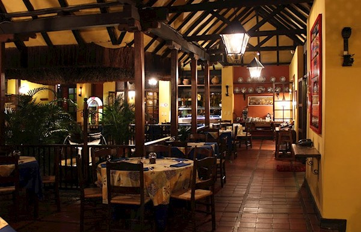
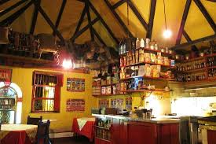
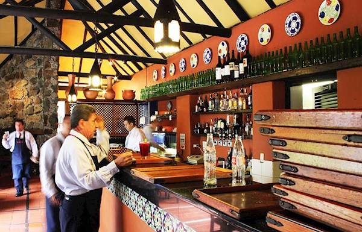
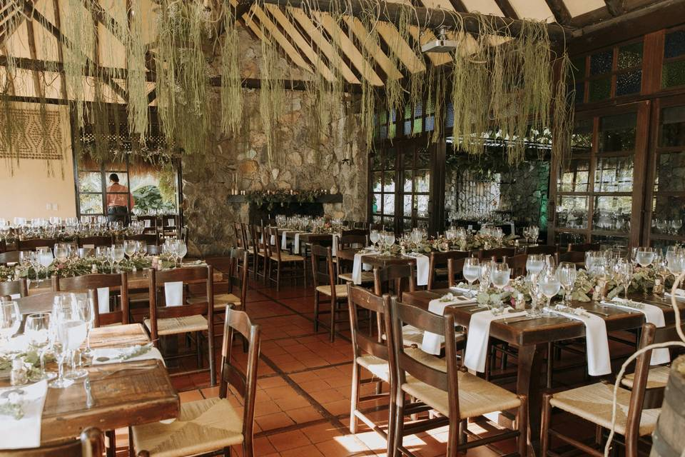

Hato Viejo is a popular restaurant chain with four locations in Medellín. This chain serves good typical food: traditional Colombian dishes. Hato Viejo's restaurants is one of the most popular restautant in Medellin to test the best Colombian food. And they tend to have a nice, relaxed atmosphere, plus some places have live music on Friday and Saturday nights. Surprisingly, even after living in Medellín for over eight years, I had not tried this restaurant until I recently went with a friend. And I was impressed with the very good Colombian food found in Hato Viejo. Plus, you can find most of the 15 traditional Colombian dishes we looked at earlier on Hato Viejo's menu.
    Go back